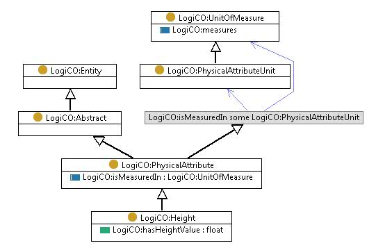

http://ontology.tno.nl/logico#Height
Class LogiCO:Height

rdf:type
owl:Class
rdfs:subClassOf
LogiCO:PhysicalAttribute
References
as rdfs:domain (
LogiCO:hasHeightValue
)
as rdfs:range (
LogiCO:has height
)
as rdfs:subClassOf (
LogiCO:Height lenght width unit
)
Generated with
TopBraid Composer
by
TopQuadrant, Inc.